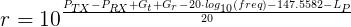
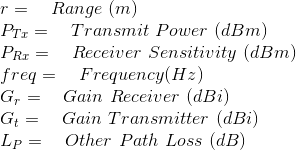

Friis Transmission Power / Range Calculator:
Calculate for:
Frequency:
Tx Gain (dBi):
Tx Power:
Rx Gain (dBi):
Range:
Other Loss (dB):
Received Power:
This calculator uses the Friis Transmission Equation for calculating RF power or RF range. Often this equation is used when calculating link budgets. The following equation is the specific equation used for calculating range:


Source for this calculator can be found here